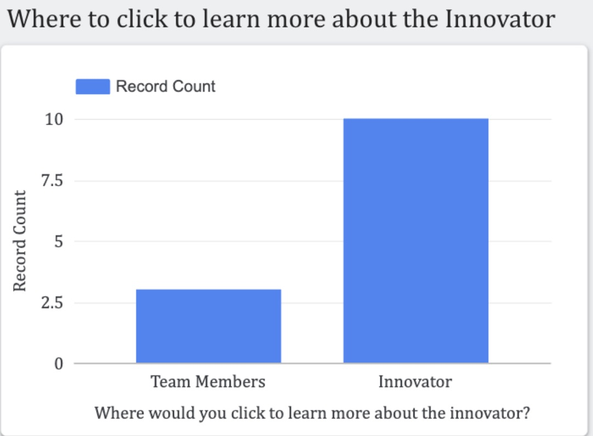
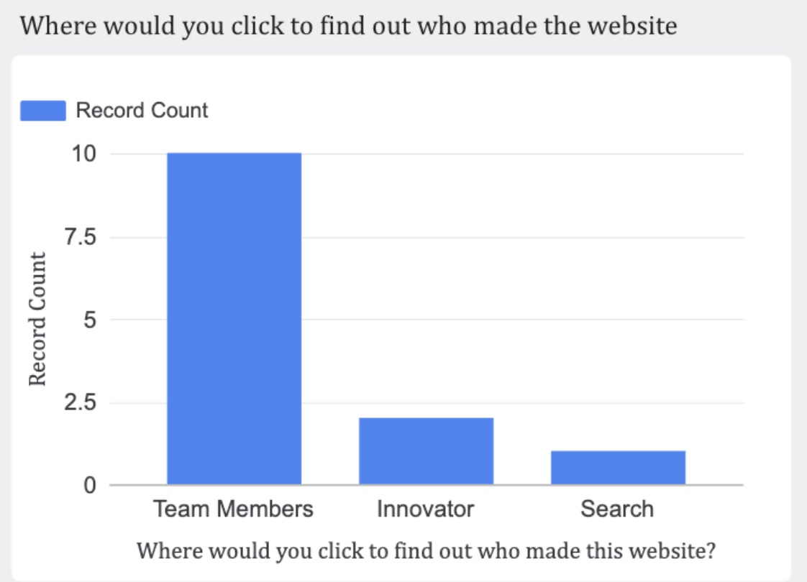
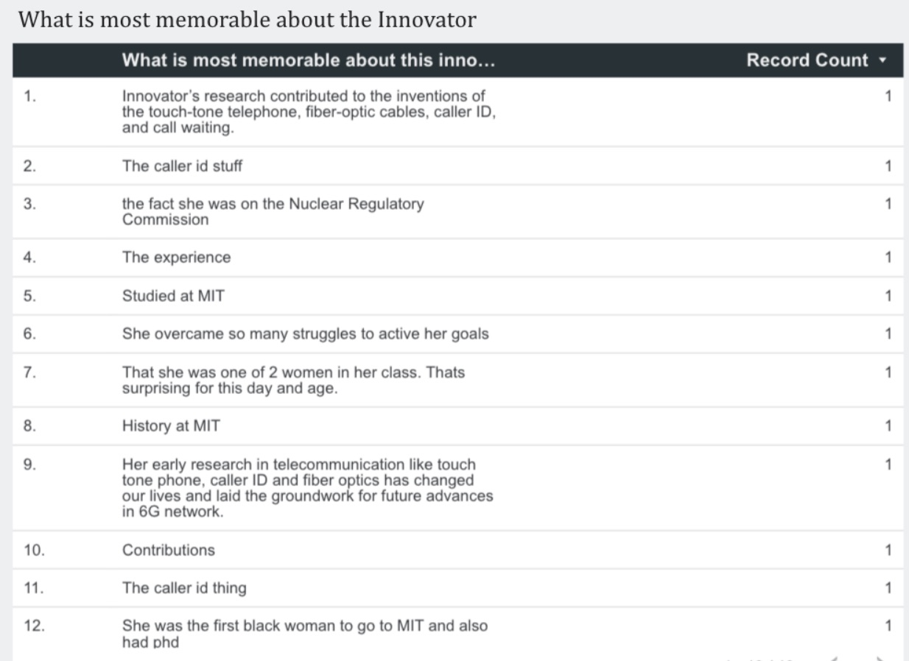
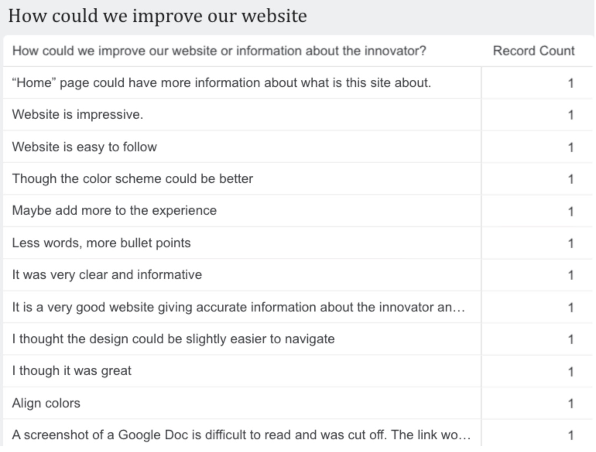
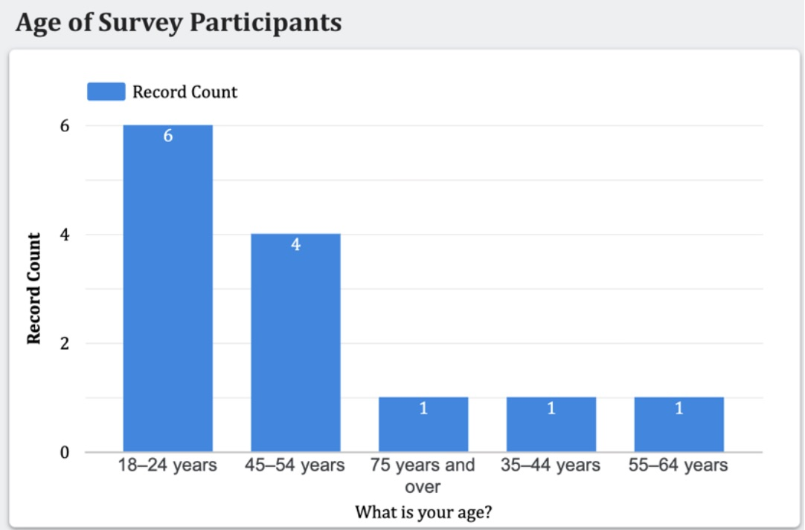
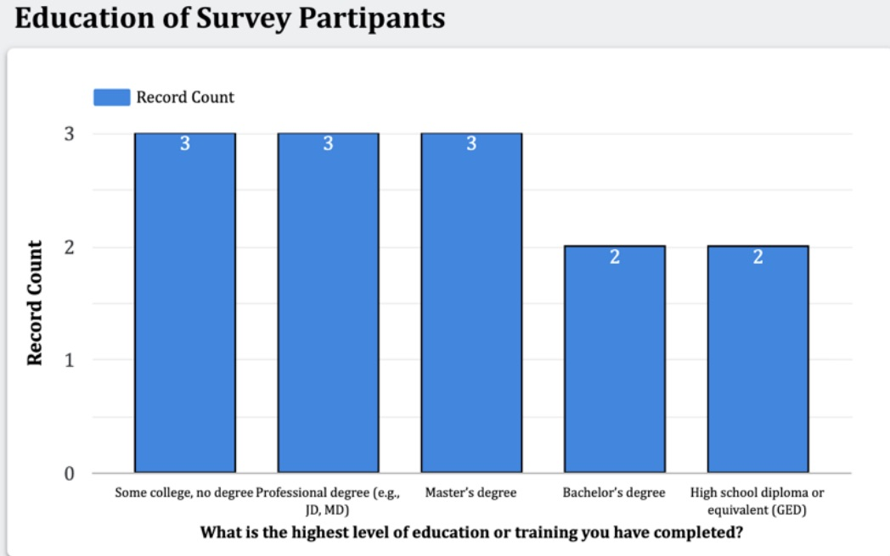
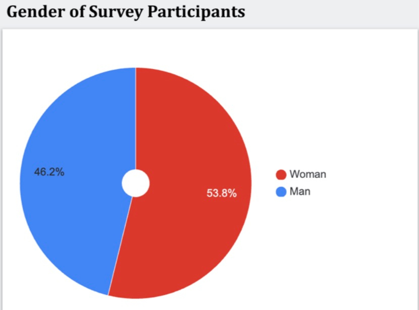

The project charter is a brief document that identifies which underrepresented person in technology we plan to highlight and outlines our overall group plan for completing the project effectively. The charter covers all necessary topics to create a clear, organized project plan. It guarantees who will be submitting assignments and establishes specific times and locations that we planned to meet consistently. The purpose of this charter is to hold everyone accountable to the necessary work and guide us through the process gracefully while promoting strong communication and collaborative teamwork throughout the project.
We conducted deep research on our innovator, Dr. Shirley Jackson, examining her technological contributions and exploring how her work will be further advanced in contemporary innovation. We assembled a complete profile for Dr. Jackson, refining its clarity and depth. That information was compiled into a document that integrates our original research with our new insights. An important aspect of our research involved relating her contributions back to the three pillars of informatics: computational thinking, design thinking, and sociotechnical thinking, while also emphasizing the context of her achievements.
The website wireframe is where we began forming an initial plan for our website and how it will be organized. We included as much content as possible, allowing the wireframe to be an accurate outline to follow while building the site. The wireframe itself is interactive and holds many placeholders, as most content could not be included, as we had not completed much of the project at the time. Our wireframe includes three frames: Team, Innovator & Their Contribution, and Our Process. The wireframe itself is purposefully bare and simple to keep options open for customization and organizational purposes while developing the website. This is obvious in the change of color scheme, organization, and inclusion of a Home page.
Using our abilities in HTML and CSS and the website wireframe, we created the first complete draft of our website. We highlight our team members on a team.html page, explain Dr. Jackson’s career and contributions on an innovator.html page, document our process on a process.html page, and tie it all together with a Home or index.html page. Most of the assignments on our process.html page had not yet been completed, so we used placeholders to indicate how items would be organized. We made sure to include media and hyperlinks to help develop a fuller demonstration of our information. The layout of our website uses Bootstrap and a project.css file.
To gain feedback on the interactability of our website, each member in our group conducted interviews with peers. The interviews were with one person at a time, following a script in order to gain feedback on several different aspects of the website, such as design and accessibility. Along with interviews, our team distributed a survey to gain qualitative and quantitative information about our website. We used a template provided for the survey and created a distribution plan to achieve at least 60 responses. Each team member had the responsibility of distributing the survey to as many people as possible. The raw responses of the survey are necessary to complete our next step, data visualization.
Click here to access the Google Drive folder!
Across the three interviews, users generally found the website functional and easy to navigate, with a few areas for
improvement. Jay’s interview with his mom pointed out that while the site is user-friendly, some images should be rescaled
for better visual balance. Matt’s interview with Madilyn claimed more positive feedback about navigation, but she noted that the
website feels bland, with long paragraphs that overwhelmed her. Youssef’s interview with Joseph focused on the "weird" color
scheme and overall clutter, which he suggested could be improved using bullet points and refining the innovator section by emphasizing key
facts about Dr. Jackson.
Our takeaways and further implementations from the interviews were the following:
Improve scaling of images and corresponding text.
More inviting and exciting visual presentation of the website.
Present information more directly and efficiently.
Make a more cohesive color scheme.
Implement key information at faster accessibility.
Clean up lengthy paragraphs.
Utilizing Google Sheets and Looker Studio, our team visualized the feedback we received from our survey. By making graphs and charts with the data, we identified improvements to the design and content of our website. These visualizations helped extract new data and feedback. We organized a PDF that contained a brief explanation of our survey feedback, revisions we want to implement, and our approach to the application of our revisions. We also made sure to include links to both the survey results and the interview results.


The first graph shows that most participants would click on the “Innovator” section rather than “Team Members” when trying to learn more about Dr. Jackson. However, a small minority clicked on the wrong site, suggesting that the label does not always clearly communicate where information is located. The second graph shows that most people would click on “Team Members” to find out who created the website, indicating that users mostly associate that label with our information. These insights are important because they help us reevaluate our navigation tools and labels.


These final tables show responses to open-ended feedback about the website. The improvement table highlights specific suggestions, such as enhancing the home page, improving the color scheme, and using more concise text. These open-ended questions greatly help identify problems to refine user experience. The memorable qualities table shows what information about the innovator resonated most with users, helping us understand which content is best emphasized.



The graphs above show the age, education, and gender distribution of survey participants. They highlight that most participants are young yet have varied educational backgrounds. There is also a fairly even split between men and women, with women taking a slight majority. This information is important because it helps us understand the demographics behind the survey results and assess how representative the responses may be.
Our takeaways and further implementations from the survey results were the following (some repeated from interview feedback):
Improve navigation to find information.
Add more information on the Home page.
Improve scaling of images and corresponding text.
Make a more cohesive color scheme.
Implement key information at faster accessibility.
Clean up lengthy paragraphs.
We created a presentation covering Dr. Shirley Jackson, her technological contribution, the potential future of the technology, and the way in which we completed the project. It’s a 5-minute presentation that includes a demonstration of our website and a quick overview of the content included to improve clarity and engagement for everyone attending the session. We made sure to keep our slides simple so as to not simply read off of them. Our presentation took place on Thursday, November 20, 2025.
Our final website is the one you are currently on! To wrap up our project, we validated that all required material was posted to our website and finalized the project. We certified that all required materials were uploaded and accessible from the website. The website includes all revised sections based on our collected revisions from the website feedback and data visualization. It also includes extra sections beyond our original draft, including an overview of our feedback and revisions, a team reflection, and a short explanation of how and why we created the website.
Our team did a good job of allowing each team member to complete work based on personal proficiencies. Jay handled the majority of research in order to deeply understand the career and implications of Dr. Shirley Jackson. Youssef was a gatherer of feedback throughout and expertly analyzed our data to discover the best revisions we could make to our project. Matt developed our website from the ground up, constantly implementing adjustments to create a professional-looking website. While our little communication hindered complete success, there is not one to blame. We’d recommend future groups also allow their team members to work where they’re most proficient and correct our mistake by staying accountable and in touch frequently about the project.
We certify that the content included on this website is original work (or is cited accurately) and accurate to our knowledge.
Work included which was conducted as part of a team is indicated and attributed.
Matthew Ritten, Jay Duggal, and Youssef Ahmar | Layout by Bootstrap.